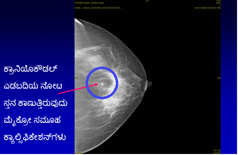

ಮ್ಯಾಮೋಗ್ರಾಮ್ ಎಂದರೇನು?
ಸ್ತನದ ಗಡ್ಡೆ/ಇತ್ತೀಚೆಗೆ ಸ್ತನದಲ್ಲಿ ಬದಲಾವಣೆ ಕಂಡುಬಂದವರಿಗೆ ಮ್ಯಾಮೋಗ್ರಾಮ್ (ಸ್ತನದ ಎಕ್ಸ್ ರೇ) ಮಾಡಲಾಗುತ್ತದೆ ತಜ್ಞರಿಂದ ಚಿಕಿತ್ಸಾತ್ಮಕ ಸ್ತನ ತಪಾಸಣೆ, ಮ್ಯಾಮೋಗ್ರಾಮ್ ಮತ್ತು ಸ್ತನ ಅಲ್ಟ್ರಾಸೌಂಡ್ನಿಂದ ಸ್ತನದಲ್ಲಿನ ಸಮಸ್ಯೆಯನ್ನು ಗುರುತಿಸಬಹುದಾಗಿದೆ.
ವೈದ್ಯರು..ನನಗೆ ಗಂಟು ಕಂಡುಬಂದಿಲ್ಲ. ನಾನು ಯಾಕೆ ಮ್ಯಾಮೋಗ್ರಾಮ್ ಮಾಡಿಸಿಕೊಳ್ಳಬೇಕು?
ಸ್ಕ್ರೀನಿಂಗ್ ಮ್ಯಾಮೋಗ್ರಾಮ್ ಎಂದರೇನು?
ಸ್ತನದಲ್ಲಿ ಗಡ್ಡೆಯನ್ನು ಮಹಿಳೆ ಅಥವಾ ವೈದ್ಯರು ಗುರುತಿಸಲು ಸಾಧ್ಯವಾಗದ ಹಂತದಲ್ಲಿ ಸ್ತನ ಕ್ಯಾನ್ಸರ್ ಅನ್ನು ಗುರುತಿಸಲು ಮ್ಯಾಮೋಗ್ರಾಮ್ (ಸ್ತನದ ಎಕ್ಸ್ರೇ) ಮಾಡಲಾಗುತ್ತದೆ. 40ನೇ ವರ್ಷದ ನಂತರ ಪ್ರತಿ ವರ್ಷಕ್ಕೊಮ್ಮೆ ಸ್ಕ್ರೀನಿಂಗ್ ಮ್ಯಾಮೀಗ್ರಾಮ್ ಅನ್ನು ಮಾಡಿಸಿಕೊಳ್ಳುವಂತೆ ಸಲಹೆ ಮಾಡಲಾಗಿದೆ.
ಮ್ಯಾಮೋಗ್ರಾಫಿ ಮೂಲಕ (ಸ್ತನದ ಎಕ್ಸ್ರೇ) ಸ್ತನ ಸ್ಕ್ರೀನಿಂಗ್ ನಡೆಸುವದರಿಂದ ಇದು ಗಡ್ಡೆಯಾಗುವ ಹಲವು ವರ್ಷಗಳ ಮೊದಲೇ ಗುರುತಿಸುವ ಉತ್ತಮ ವಿಧಾನವಾಗಿದೆ. ಸ್ತನ ಕ್ಯಾನ್ಸರ್ ಅನ್ನು ಆರಂಭದಲ್ಲೇ ಪತ್ತೆ ಮಾಡುವುದರಿಂದ ಯಶಸ್ವಿಯಾಗಿ ಚಿಕಿತ್ಸೆ ಮಾಡಬಹುದಾಗಿದೆ. ಇದರಿಂದ ಗಮನಾರ್ಹವಾಗಿ ಸುಧಾರಣೆ ಕಾಣಬಹುದಾಗಿದೆ.



ಎಲ್ಲ ವಯಸ್ಸು ಸಮೂಹದಲ್ಲೂ ಸ್ತನ ಕ್ಯಾನ್ಸರ್ ಸ್ಕ್ರೀನ್ ಪರಿಣಾಮಕಾರಿಯಾಗಿದೆಯೇ?
ಎಲ್ಲ ವಯಸ್ಸಿನ ಮಹಿಳೆಯರೂ ಸ್ತನ ಅರಿವು ಹೊಂದಿರಬೇಕು. 40 ವಯಸ್ಸಿನ ಮಹಿಳೆಯರಲ್ಲಿ ಮಾತ್ರ ಸ್ತನ ಸ್ಕ್ರೀನ್ ಪರಿಣಾಮಕಾರಿಯಾಗಿರುತ್ತದೆ. 40 ವರ್ಷಗಳೊಳಗಿನ ಮಹಿಳೆಯರಲ್ಲಿ ಸಾಮಾನ್ಯ ಸ್ತನ ತಪಾಸಣೆ ಮಾಡಲಾಗುತ್ತದೆ.
ಮ್ಯಾಮೋಗ್ರಾಮ್ ನಡೆಸುವುದು ಸುರಕ್ಷಿತವೇ? ಇದು ರೇಡಿಯೇಶನ್ ಅಪಾಯವನ್ನು ಉಂಟು ಮಾಡುತ್ತದೆಯೇ?
ಮ್ಯಾಮೋಗ್ರಾಮ್ ಮಾಡಿಸುವುದು ಸುರಕ್ಷಿತ. ಮ್ಯಾಮೋಗ್ರಾಮ್ ಅತಿ ಕಡಿಮೆ ಪ್ರಮಾಣದ ರೇಡಿಯೇಶನ್ ಹೊರಹಾಕುತ್ತದೆ. ಇದರಿಂದ ಆರೋಗ್ಯದ ಮೇಲೆ ಉಂಟಾಗುವ ಪರಿಣಾಮವ ಗಮನಾರ್ಹವಾದುದಲ್ಲ. ಮ್ಯಾಮೋಗ್ರಫಿ ವೇಳೆ ನೀಡಲಾದ ರೇಡಿಯೇಶನ್ ಎಕ್ಸ್ ರೇಯಲ್ಲಿ ನೀಡಲಾಗುವ ರೇಡಿಯೇಶನ್ಗೆ ಸಮನಾಗಿದೆ.
ಮ್ಯಾಮೋಗ್ರಫಿ ನೋವುಂಟು ಮಾಡುತ್ತದೆಯೇ?
ಮ್ಯಾಮೋಗ್ರಫಿಯಿಂದ ಅನಾನುಕೂಲ ಉಂಟಾಗಬಹುದು. ಸರಿಯಾಗಿ ತರಬೇತಿ ಪಡೆದ ರೇಡಿಯೋಗ್ರಾಫರ್ನಿಂದ ಮಾಡಿದ್ದರೆ ಇದರಿಂದ ನೋವಾಗುವುದಿಲ್ಲ. ಡಿಜಿಟಲ್ ಮ್ಯಾಮೋಗ್ರಫಿಯಿಂದ ಅನಾನುಕೂಲ ಕಡಿಮೆಯಾಗಿದೆ
ಸಾಂಪ್ರದಾಯಿಕ ಮ್ಯಾಮೋಗ್ರಾಮ್ ಮತ್ತು ಡಿಜಿಟಲ್ ಮ್ಯಾಮೋಗ್ರಾಮ್ ಮಧ್ಯೆ ವಿಭಿನ್ನತೆ ಏನಿದೆ?
ಸಂಪೂರ್ಣ ಕ್ಷೇತ್ರದ ಡಿಜಿಟಲ್ ಮ್ಯಾಮೋಗ್ರಫಿಯು ಕ್ರಾಂತಿಕಾರಕ ಸುಧಾರಣೆಯಾಗಿದ್ದು, ಇದರಿಂದ ಸ್ತನದ ಚಿತ್ರಣವನ್ನು ಐದು ಸೆಕೆಂಡಿನಲ್ಲಿ ತೆಗೆಯಬಹುದಾಗಿದೆ (ಸಾಂಪ್ರದಾಯಿಕ ವಿಧಾನದಲ್ಲಿ ಮ್ಯಾಮೋಗ್ರಾಮ್ಗೆ ನಾಲ್ಕರಿಂದ 5 ನಿಮಿಷಗಳು ಅಗತ್ಯವಿರುತ್ತದೆ). ಈ ಹೊಸ ತಂತ್ರವು ಸಾಂಪ್ರದಾಯಿಕ ಮ್ಯಾಮೋಗ್ರಫಿಯಿಂದ ಹೆಚ್ಚು ಪರಿಣಾಮಕಾರಿಯಾಗಿದೆ. ಇದು ಆರಂಭಿಕ ಸ್ತನ ಕ್ಯಾನ್ಸರ್ ಬದಲಾವಣೆಗಳನ್ನು ತೋರಿಸುತ್ತದೆ ಮತ್ತು ದಪ್ಪನೆಯ ಸ್ತನವಿರುವ ಮಹಿಳೆಯರಲ್ಲಿ ಇದು ಹೆಚ್ಚು ಉಪಯುಕ್ತವಾಗಿರುತ್ತದೆ. ಸಾಂಪ್ರದಾಯಿಕ ಮ್ಯಾಮೋಗ್ರಾಮ್ಗೆ ಹೋಲಿಸಿದರೆ ಇತರ ಅನುಕೂಲಗಳೆಂದರೆ ಕಡಿಮೆ ಸಮಸ್ಯೆ ಮತ್ತು ಕಡಿಮೆ ಪ್ರಮಾಣದ ರೇಡಿಯೇಶನ್ ಮತ್ತು ಅತ್ಯುತ್ತಮ ಖಚಿತತೆಯನ್ನು ಈ ಕೆಳಗೆ ಹೈಲೈಟ್ ಮಾಡಲಾಗಿದೆ.
ಟೆಲಿಮೆಡಿಸಿನ್ ಸೌಲಭ್ಯದಿಂದಾಗಿ, ಎರಡನೇ ಅಭಿಪ್ರಾಯಕ್ಕಾಗಿ ಡಿಜಿಟಲ್ ಚಿತ್ರಗಳನ್ನು ವಿಶ್ವದ ಎಲ್ಲೆಡೆಗಾದರೂ ಕಳುಹಿಸಬಹುದಾಗಿದೆ. ಮಶಿನ್ ತುಂಬಾ ವೆಚ್ಚದಾಯಕವಾಗಿದ್ದು, ಭಾರತದಲ್ಲಿ ಸಂಪೂರ್ಣ ಕ್ಷೇತ್ರದ ಡಿಜಿಟಲ್ ಮ್ಯಾಮೋಗ್ರಫಿ ವಿಶಾಲವಾಗಿ ಲಭ್ಯವಿಲ್ಲ.
ಸ್ತನ ಕ್ಯಾನ್ಸರ್ ಗುರುತಿಸುವಲ್ಲಿ ಮ್ಯಾಮೋಗ್ರಫಿ ಶೇ. 100 ನಿಖರವಾಗಿದೆಯೇ?
ಈ ಹಿಂದೆ ಸ್ತನ ಕ್ಯಾನ್ಸರ್ ಅನ್ನು ಗುರುತಿಸುವಲ್ಲಿ ಮ್ಯಾಮೋಗ್ರಾಮ್ಗಳು ಅತ್ಯಂತ ದಕ್ಷವಾಗಿದ್ದವು. ಇತರ ಸ್ಕ್ರೀನಿಂಗ್ ತಪಾಸಣೆಗಳಂತೆಯೇ, ಅವು ಪರಿಪೂರ್ಣವಲ್ಲ. ಮ್ಯಾಮೋಗ್ರಫಿಯ ನಿಖರತೆಯು ಶೇ. 85 ಆಗಿದೆ.ಕಾರಣಗಳೆಂದರೆ:
ಸ್ತನದ ಎಂಆರ್ಐನ ಪಾತ್ರವೇನು?
ನಿತ್ಯದ ಸ್ತನ ಸ್ಕ್ರೀನಿಂಗ್ಗೆ ಸ್ತನ ಎಂಆರ್ಐ ಅನ್ನು ಶಿಫಾರಸು ಮಾಡುವುದಿಲ್ಲ ಅಥವಾ ಸ್ತನ ಕ್ಯಾನ್ಸರ್ನ ಪ್ರತಿ ರೋಗಿಯ ವಿಶ್ಲೇಷಣೆಗೂ ಶಿಫಾರಸು ಮಾಡುವುದಿಲ್ಲ.
ಆದರೆ, ಕೆಲವು ಸನ್ನಿವೇಶಗಳಲ್ಲಿ ಅತ್ಯಂತ ಉಪಯುಕ್ತವಾಗಿದೆ: